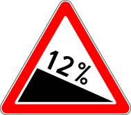
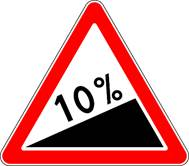

11. Обгон, опережение, встречный разъезд
изменения от 8 апреля 2020
11.1. Прежде чем начать обгон, водитель обязан убедиться в том, что полоса движения, на которую он собирается выехать, свободна на достаточном для обгона расстоянии и в процессе обгона он не создаст опасности для движения и помех другим участникам дорожного движения.
11.2. Водителю запрещается выполнять обгон в случаях, если:
· транспортное средство, движущееся впереди, производит обгон или объезд препятствия;
· транспортное средство, движущееся впереди по той же полосе, подало сигнал поворота налево;
· следующее за ним транспортное средство начало обгон;
· по завершении обгона он не сможет, не создавая опасности для движения и помех обгоняемому транспортному средству, вернуться на ранее занимаемую полосу.
11.3. Водителю обгоняемого транспортного средства запрещается препятствовать обгону посредством повышения скорости движения или иными действиями.
11.4. Обгон запрещен:
· на регулируемых перекрестках, а также на нерегулируемых перекрестках при движении по дороге, не являющейся главной;
· на пешеходных переходах;
· на железнодорожных переездах и ближе чем за 100 метров перед ними;
· на мостах, путепроводах, эстакадах и под ними, а также в тоннелях;
· в конце подъема, на опасных поворотах и на других участках с ограниченной видимостью.
11.5. Опережение транспортных средств при проезде пешеходных переходов осуществляется с учетом требований пункта 14.2 Правил.
11.6. В случае если вне населенных пунктов обгон или опережение тихоходного транспортного средства, крупногабаритного транспортного средства или транспортного средства, двигающегося со скоростью, не превышающей 30 км/ч, затруднены, водитель такого транспортного средства должен принять как можно правее, а при необходимости остановиться, чтобы пропустить следующие за ним транспортные средства.
11.7. В случае если встречный разъезд затруднен, водитель, на стороне которого имеется препятствие, должен уступить дорогу. Уступить дорогу при наличии препятствия на уклонах, обозначенных знаками 1.13 и 1.14 , должен водитель транспортного средства, движущегося на спуск.

Знак 1.13

Знак 1.14